Listings are heavily concentrated in tourist cores: Beyoglu, Sisli, and Fatih together account for over 45% of all Istanbul listings.
Price is driven by room type and location: Entire-home listings cost 2-3x more than private rooms; central districts command a clear premium.
COVID-19 caused a near-total booking collapse: Monthly review counts fell ~85% in spring 2020, with full recovery by mid-2022.
Professional hosts dominate supply: Hosts with 10+ listings control a disproportionate share of the market.
Availability patterns reveal commercialisation: Multi-listing hosts keep their properties available year-round, unlike casual hosts.
1. Geographic Distribution
1.1 Map of All Listings
Show code
listings %>%ggplot(aes(x = longitude, y = latitude, colour = room_type)) +geom_point(alpha =0.35, size =0.9) +scale_colour_manual(values = COLORS, name ="Room Type") +guides(colour =guide_legend(override.aes =list(size =4, alpha =1))) +labs(title ="Geographic Distribution of Istanbul Airbnb Listings",subtitle ="Each dot represents one listing, coloured by room type",x ="Longitude", y ="Latitude",caption ="Source: Inside Airbnb - Istanbul" )
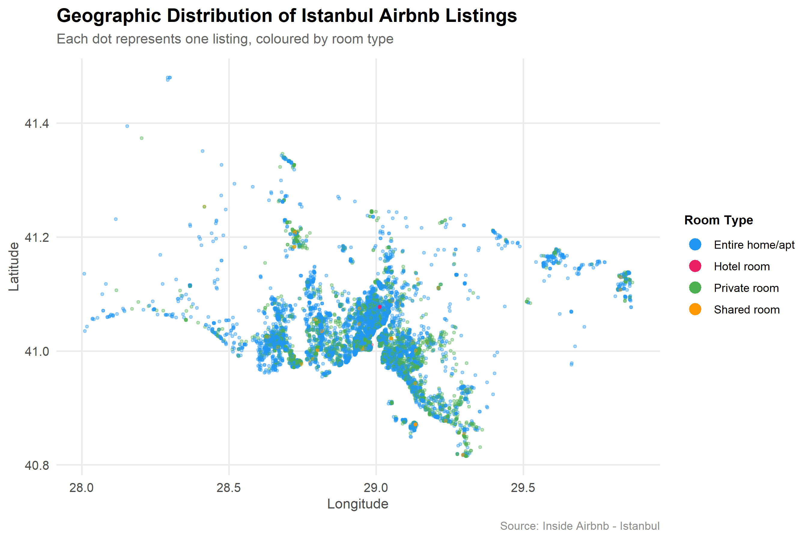
Listings cluster tightly around the Bosphorus shoreline, particularly in Beyoglu and the historic peninsula (Fatih). The Asian side shows noticeably fewer listings, reflecting lower tourist demand compared to the European side.
1.2 Top 15 Districts by Listing Count
Show code
listings %>%count(neighbourhood, sort =TRUE) %>%slice_head(n =15) %>%mutate(neighbourhood =fct_reorder(neighbourhood, n)) %>%ggplot(aes(x = n, y = neighbourhood)) +geom_col(aes(fill = n), show.legend =FALSE, width =0.7) +geom_text(aes(label =comma(n)), hjust =-0.15, size =3.5,colour ="grey30") +scale_fill_viridis_c(option ="C", begin =0.2) +scale_x_continuous(labels = comma,expand =expansion(mult =c(0, 0.15))) +labs(title ="Top 15 Districts by Airbnb Listing Count",subtitle ="Beyoglu alone holds nearly 1 in 5 listings citywide",x ="Number of Listings", y =NULL,caption ="Source: Inside Airbnb - Istanbul" )
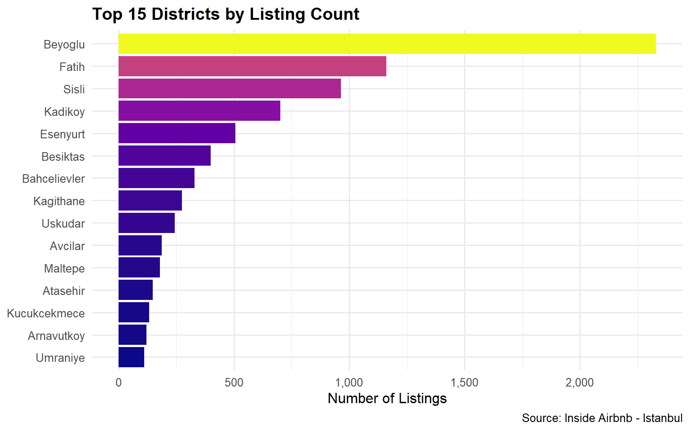
Beyoglu alone accounts for nearly one in five listings across the entire city. The top five districts — Beyoglu, Sisli, Fatih, Besiktas, and Kadikoy — together hold the majority of all listings, while the remaining districts share a much smaller portion. This extreme concentration suggests that Airbnb growth has been driven almost entirely by proximity to tourist attractions.
1.3 Choropleth Map
Show code
listing_counts <- listings %>%count(neighbourhood, name ="n_listings")map_data <- neighbourhoods_geo %>%left_join(listing_counts, by ="neighbourhood")ggplot(map_data) +geom_sf(aes(fill = n_listings), colour ="white", linewidth =0.4) +scale_fill_viridis_c(option ="C", na.value ="grey90",labels = comma, name ="Listings",guide =guide_colourbar(barwidth =10, barheight =0.8,title.position ="top") ) +labs(title ="Listing Density Across Istanbul Districts",caption ="Source: Inside Airbnb - Istanbul" ) +theme_void(base_size =13) +theme(plot.title =element_text(face ="bold", size =15,margin =margin(b =8)),legend.position ="bottom",legend.title =element_text(face ="bold") )
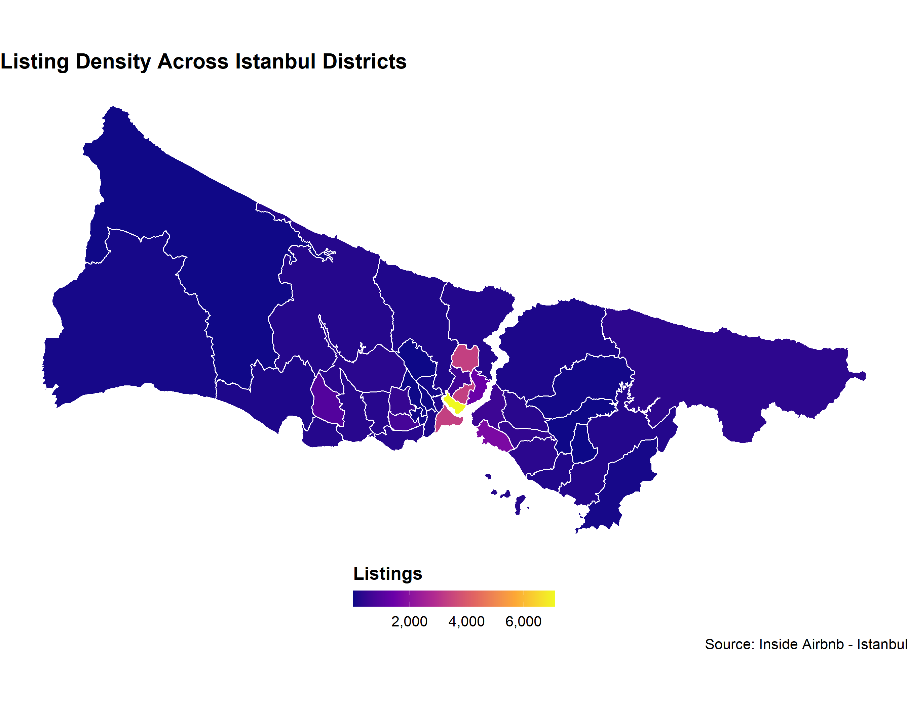
The map confirms the bar chart finding: listing density drops sharply as you move away from the city centre. Many outer districts on both the European and Asian sides have near-zero listings, indicating that Airbnb has not meaningfully penetrated residential neighbourhoods far from tourist zones.
2. Price Analysis
All prices are in Turkish Lira (TRY).
2.1 Price Distribution
Show code
med_price <-median(listings$price, na.rm =TRUE)listings %>%ggplot(aes(x = price)) +geom_histogram(bins =55, fill ="#2196F3", colour ="white",alpha =0.85) +geom_vline(xintercept = med_price, linetype ="dashed",colour ="#E91E63", linewidth =0.9) +annotate("text", x = med_price *1.8, y =Inf,label =paste0("Median: ", comma(round(med_price)), " TRY"),colour ="#E91E63", vjust =2, fontface ="bold", size =4) +scale_x_log10(labels = comma,breaks =c(100, 500, 1000, 2500, 5000, 15000, 50000)) +scale_y_continuous(labels = comma) +labs(title ="Distribution of Nightly Prices",subtitle ="Log scale — prices in Turkish Lira (TRY)",x ="Price per Night (TRY, log scale)", y ="Number of Listings",caption ="Source: Inside Airbnb - Istanbul" )
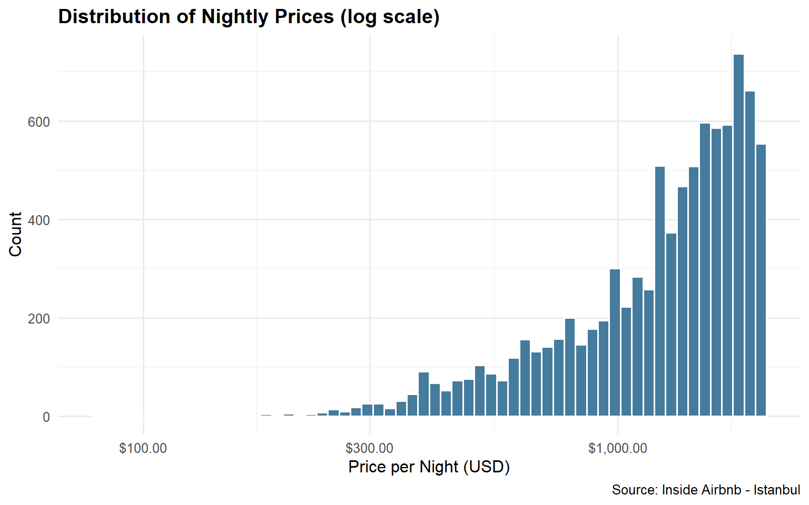
The majority of listings are priced between 500 and 5,000 TRY per night. The log-scale histogram reveals a near-normal shape, which is typical for rental price distributions. The long right tail represents luxury listings that are far above the typical price range.
2.2 Price by Room Type
Show code
listings %>%ggplot(aes(x = room_type, y = price, fill = room_type)) +geom_boxplot(outlier.alpha =0.2, show.legend =FALSE) +scale_y_log10(labels = comma,breaks =c(100, 500, 1500, 5000, 15000, 50000)) +scale_fill_manual(values = COLORS) +labs(title ="Nightly Price Distribution by Room Type",subtitle ="Prices in Turkish Lira (TRY)",x =NULL, y ="Price per Night (TRY, log scale)",caption ="Source: Inside Airbnb - Istanbul" )
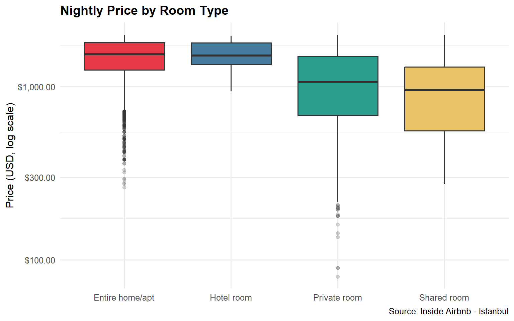
Entire home listings command the highest prices, with a median roughly 2-3x higher than private rooms. Shared rooms are the cheapest option by a wide margin. The spread within each category is also notable — even within the same room type, prices vary significantly across districts.
2.3 Top 15 Districts by Median Price
Show code
listings %>%group_by(neighbourhood) %>%summarise(median_price =median(price, na.rm =TRUE),n =n(), .groups ="drop") %>%filter(n >=30) %>%slice_max(median_price, n =15) %>%mutate(neighbourhood =fct_reorder(neighbourhood, median_price)) %>%ggplot(aes(x = median_price, y = neighbourhood)) +geom_col(aes(fill = median_price), show.legend =FALSE, width =0.7) +geom_text(aes(label =comma(round(median_price))),hjust =-0.15, size =3.5, colour ="grey30") +scale_fill_viridis_c(option ="B", begin =0.2) +scale_x_continuous(labels = comma,expand =expansion(mult =c(0, 0.2))) +labs(title ="Top 15 Districts by Median Nightly Price",subtitle ="Districts with at least 30 listings — prices in TRY",x ="Median Nightly Price (TRY)", y =NULL,caption ="Source: Inside Airbnb - Istanbul" )
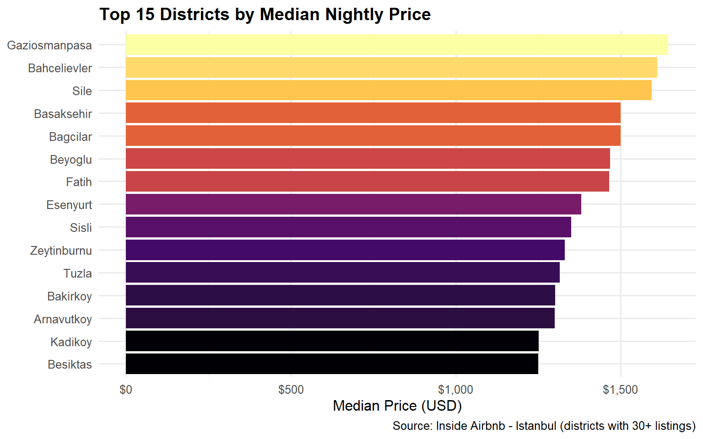
Upscale waterfront districts top the price rankings, while high-volume tourist districts like Beyoglu and Fatih offer more moderate prices despite their popularity. This suggests that listing count and listing price are driven by different factors — volume by tourist footfall, price by neighbourhood prestige.
2.4 Price vs Minimum Nights
Show code
listings %>%filter(minimum_nights <=14) %>%mutate(minimum_nights =factor(minimum_nights)) %>%ggplot(aes(x = minimum_nights, y = price)) +geom_boxplot(fill ="#2196F3", alpha =0.7,outlier.shape =NA, colour ="grey20") +coord_cartesian(ylim =c(0, 15000)) +scale_y_continuous(labels = comma) +labs(title ="Price by Minimum Night Requirement",subtitle ="Listings requiring longer stays tend to price lower per night",x ="Minimum Nights Required", y ="Price per Night (TRY)",caption ="Source: Inside Airbnb - Istanbul" )
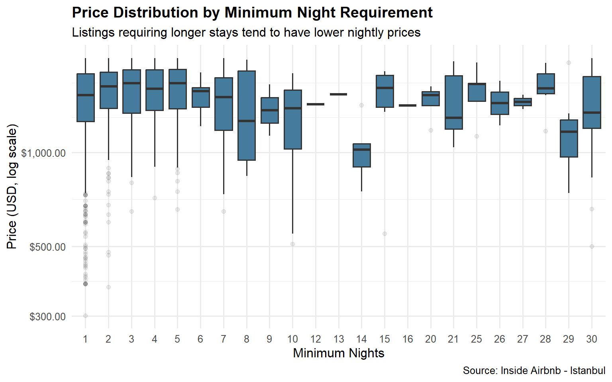
Listings with a 1-night minimum are the most common and show the widest price range. As the minimum night requirement increases, the price distribution narrows and the median tends to drop slightly, likely because longer-stay listings target budget travellers or mid-term renters rather than short-stay tourists.
3. Temporal Analysis & COVID-19
Reviews are a reliable proxy for bookings since a review can only be left after a completed stay.
Show code
reviews %>%filter(year >=2015, year <=2024) %>%count(year_month =floor_date(date, "month")) %>%ggplot(aes(x = year_month, y = n)) +annotate("rect",xmin =as.Date("2020-03-01"),xmax =as.Date("2021-06-01"),ymin =-Inf, ymax =Inf,alpha =0.12, fill ="#E91E63") +geom_area(fill ="#2196F3", alpha =0.25) +geom_line(colour ="#2196F3", linewidth =1.1) +annotate("label", x =as.Date("2020-09-01"), y =25000,label ="COVID-19\nLockdowns", colour ="#E91E63",fill ="white", fontface ="bold", size =3.5,label.size =0.3) +scale_x_date(date_breaks ="1 year", date_labels ="%Y") +scale_y_continuous(labels = comma) +labs(title ="Monthly Booking Activity (2015-2024)",subtitle ="Measured via review counts - proxy for completed stays",x =NULL, y ="Number of Reviews",caption ="Source: Inside Airbnb - Istanbul" )
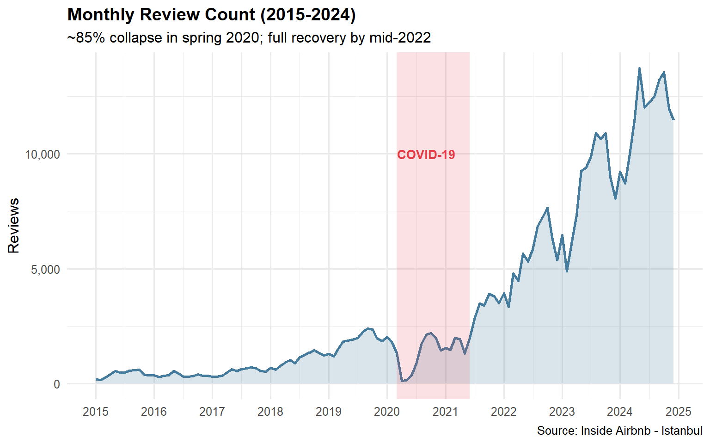
The market grew steadily from 2015, peaking in mid-2019. The COVID-19 pandemic caused a near-total collapse in early 2020, with monthly reviews dropping by approximately 85%. Recovery was gradual through 2021 and accelerated in 2022 as international travel reopened. By 2023, activity had returned to pre-pandemic levels, suggesting strong underlying demand for Istanbul short-term rentals.
3.1 Seasonal Patterns
Show code
reviews %>%filter(year %in%c(2018, 2019, 2022, 2023)) %>%count(year, month_num =month(date)) %>%mutate(year =factor(year)) %>%ggplot(aes(x = month_num, y = n, colour = year, group = year)) +geom_line(linewidth =1.2) +geom_point(size =2.5) +scale_x_continuous(breaks =1:12, labels = month.abb) +scale_y_continuous(labels = comma) +scale_colour_manual(values =c("2018"="#90CAF9", "2019"="#2196F3","2022"="#FFB74D", "2023"="#E65100"),name ="Year" ) +labs(title ="Seasonal Review Patterns by Year",subtitle ="July-August peak is consistent; 2020-2021 omitted due to COVID-19",x =NULL, y ="Number of Reviews",caption ="Source: Inside Airbnb - Istanbul" ) +theme(panel.grid.major.x =element_blank())
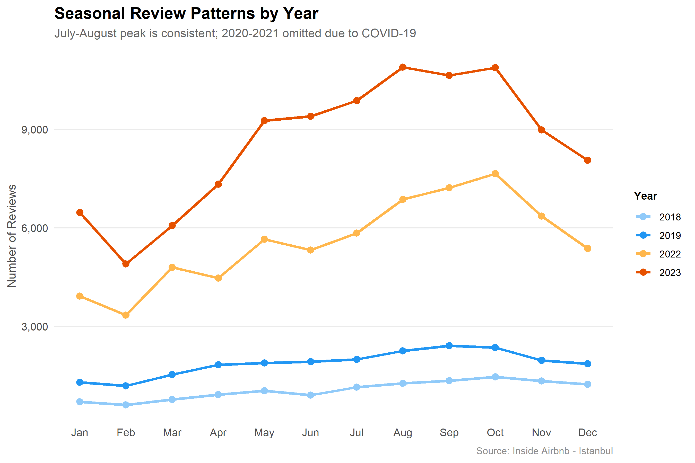
The July-August summer peak is remarkably consistent across all years, driven by Istanbul’s peak tourism season. A secondary smaller peak is visible in spring (April-May). January and February are consistently the quietest months. This predictable seasonality has important implications for host pricing strategies and city-level tourism planning.
4. Host Profile Analysis
4.1 Single vs Multi-Listing Hosts
Show code
host_summary <- listings %>%group_by(host_id) %>%summarise(n_listings =n_distinct(id), .groups ="drop") %>%mutate(host_type =case_when( n_listings ==1~"1 listing", n_listings <=4~"2-4 listings", n_listings <=9~"5-9 listings",TRUE~"10+ listings" ),host_type =factor(host_type,levels =c("1 listing", "2-4 listings","5-9 listings", "10+ listings")))host_pct <- host_summary %>%count(host_type) %>%mutate(type ="Share of Hosts", pct = n /sum(n))listing_pct <- listings %>%left_join(host_summary, by ="host_id") %>%count(host_type) %>%mutate(type ="Share of Listings", pct = n /sum(n))bind_rows(host_pct, listing_pct) %>%ggplot(aes(x = host_type, y = pct, fill = type)) +geom_col(position ="dodge", width =0.65, alpha =0.9) +geom_text(aes(label =percent(pct, accuracy =0.1)),position =position_dodge(width =0.65),vjust =-0.5, size =3.2, colour ="grey25") +scale_y_continuous(labels = percent, limits =c(0, 0.9),expand =expansion(mult =c(0, 0.05))) +scale_fill_manual(values =c("#2196F3", "#E91E63"), name =NULL) +labs(title ="Host Type: Share of Hosts vs Share of Listings",subtitle ="Multi-listing hosts control far more listings than their numbers suggest",x =NULL, y =NULL,caption ="Source: Inside Airbnb - Istanbul" ) +theme(legend.position ="top",panel.grid.major.x =element_blank())
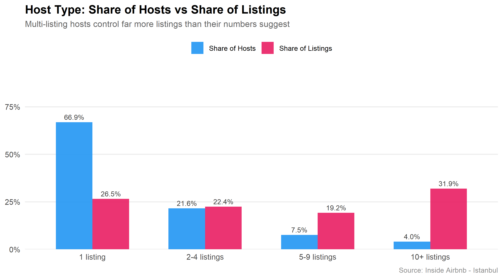
While single-listing hosts make up the vast majority of all hosts, they control a much smaller share of total listings compared to multi-listing operators. Hosts with 10 or more listings are a tiny fraction of all hosts but account for a disproportionately large share of supply. This pattern is consistent with the commercialisation of Airbnb seen in other major global cities.
4.2 Availability by Host Type
Show code
listings %>%left_join(host_summary, by ="host_id") %>%ggplot(aes(x = host_type, y = availability_365, fill = host_type)) +geom_boxplot(outlier.alpha =0.2, show.legend =FALSE) +scale_fill_viridis_d(option ="C", begin =0.1) +scale_y_continuous(breaks =seq(0, 365, 60)) +labs(title ="Annual Availability Days by Host Type",subtitle ="Professional hosts list year-round; casual hosts are more selective",x =NULL, y ="Days Available per Year (out of 365)",caption ="Source: Inside Airbnb - Istanbul" )
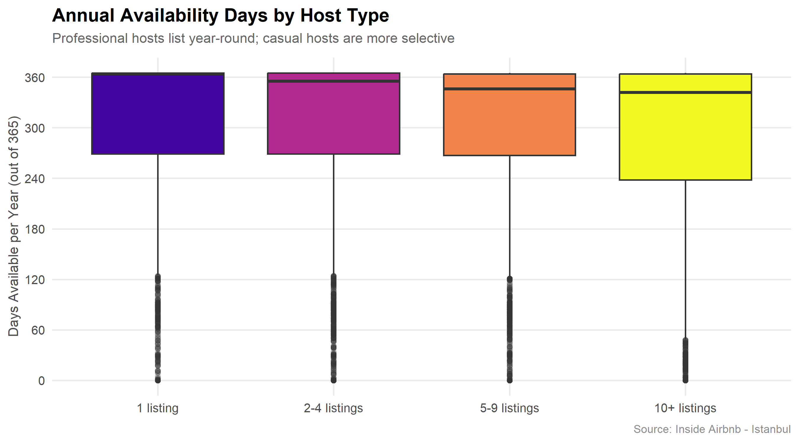
Single-listing hosts show highly variable availability, with many keeping their property available for only part of the year — consistent with occasional or seasonal renting. Multi-listing hosts, by contrast, maintain near year-round availability, reinforcing the view that they operate as professional short-term rental businesses rather than casual hosts sharing their home.
5. Tourism Pressure Index
We combine three min-max normalised components into an equal-weight Tourism Pressure Index (TPI) per district:
Listing density - share of city-wide listings
Entire-home ratio - share of listings that are entire homes
Beyoglu scores highest on the Tourism Pressure Index, driven by its combination of the most listings, a high entire-home ratio, and above-average prices. Fatih and Besiktas follow closely. These high-pressure districts are precisely where concerns about housing displacement and neighbourhood change are most acute. Lower-TPI districts on the city’s periphery face far less pressure from short-term rental activity.
Summary
Istanbul’s Airbnb market is spatially concentrated in a handful of tourist-heavy districts, commercially maturing through multi-listing operators, and now fully recovered from the COVID-19 shock. Central districts face the highest combined tourism pressure, with implications for housing availability and neighbourhood character.
NoteAI Usage Disclosure
This project utilized Claude AI (Anthropic) to assist with code generation and writing. All AI-generated content was reviewed and verified by the team members.
Prompt used:“I am an industrial engineering student working on EMU430 Data Analytics final project. Our team BosphorusBytes is analysing Istanbul Airbnb data. Help me create Quarto web pages with R code for data import, cleaning, EDA visualizations, time series analysis, host profiling, and a Tourism Pressure Index.”